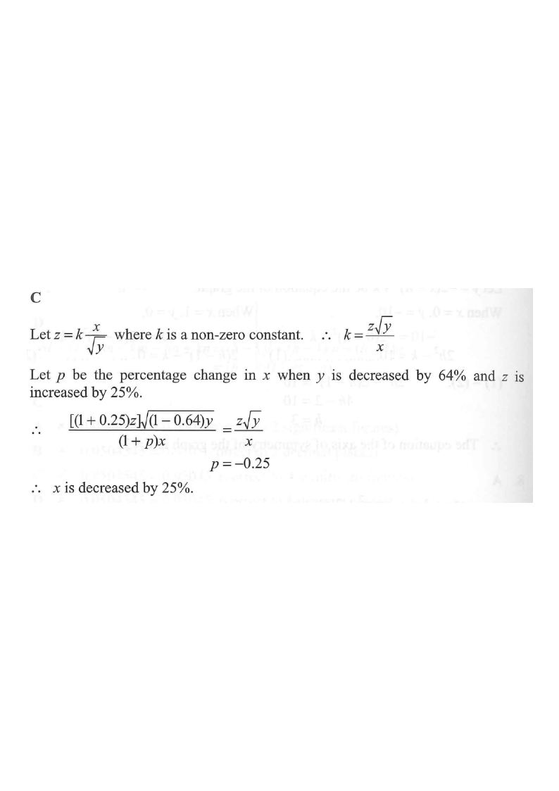

Rate, Ratio and Variations
It is given that \(z\) varies directly as \(x\) and inversely as \(\sqrt{y}\). If \(y\) is decreased by \(64\%\) and \(z\) is increased by \(25\%\), then \(x\)
- A. is increased by \(20\%\).
- B. is increased by \(80\%\).
- C. is decreased by \(25\%\).
- D. is decreased by \(75\%\).

Write the joint variation as an equation. "\(z\) varies directly as \(x\)" and "inversely as \(\sqrt{y}\)" gives, for some non-zero constant \(k\):
\[ z = k\cdot\frac{x}{\sqrt{y}} \qquad (k\neq 0) \]
Rearrange so that \(x\) is the subject — this is the quantity we must track:
\[ z=\frac{kx}{\sqrt{y}} \;\Longrightarrow\; x = \frac{z\sqrt{y}}{k} \]
Apply the percentage changes:
\[ y \to (1-64\%)\,y = 0.36\,y \qquad z \to (1+25\%)\,z = 1.25\,z \]
New value of the constant-\(k\) expression:
\[ x_{\text{new}} = \frac{1.25\,z\sqrt{0.36\,y}}{k} \]
Simplify the square root: \(\sqrt{0.36\,y}=\sqrt{0.36}\,\sqrt{y}=0.6\sqrt{y}\). Hence
\[ x_{\text{new}} = \frac{1.25\,z\,(0.6)\sqrt{y}}{k} = 0.75\,\frac{z\sqrt{y}}{k} = 0.75\,x \]
The multiplicative factor for \(x\) is \(0.75\), i.e. a change of
\[ 0.75-1 = -0.25 = -25\% \]
Therefore \(x\) is decreased by \(25\%\).